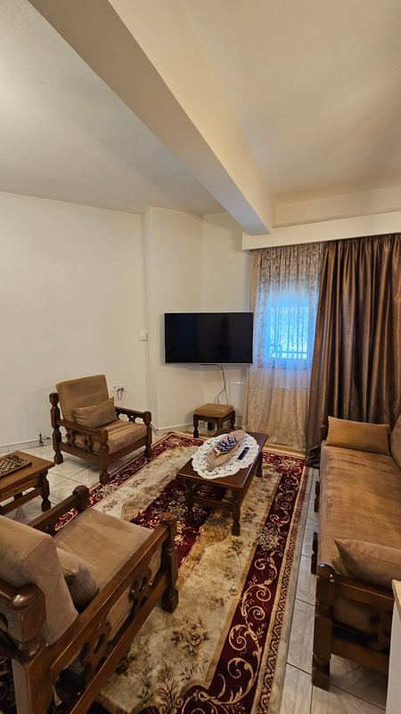

За жилището
до 8 души · 3 спални · 4 легла · 2 разтегателни дивана · 1 баня · 110 м²
Просторна къща от 110 м² в центъра на Сятища, до площада, с ресторанти, кафенета и фурна на няколко крачки. Идеална за семейства и групи.
Голяма дневна с традиционни дървени мебели, разтегателен диван, голям телевизор, климатик и шах за вечерите. До нея трапезарията и напълно оборудваната кухня с фурна, котлони, хладилник, микровълнова и кафемашина.
Три спални с телевизор: две с двойно легло, една с две единични легла и разтегателно кресло.
Голяма баня с вана, пералня, хавлии и козметика.
Удобства
- Wi-Fi
- Климатик
- Отопление
- Телевизор
- Напълно оборудвана кухня
- Кафемашина Nespresso
- Кафемашина за шварц кафе
- Фурна и микровълнова
- Пералня
- Разтегателен диван
- Спално бельо
- Хавлии за баня и лице
- Шампоан и душ гел
- Почерпка за добре дошли: вино, бисквити и кафе
- Паркинг
- Домашни любимци при поискване
- Бебешка кошара безплатно
Местоположение
3 Pigadia Square 19, 503 00 Siatista